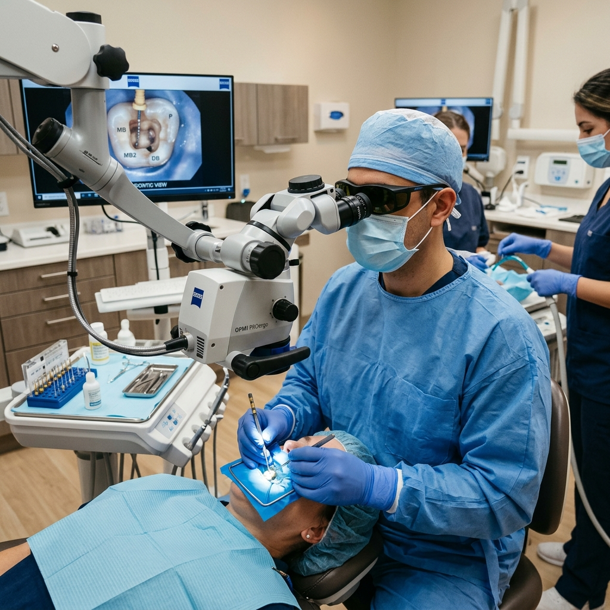
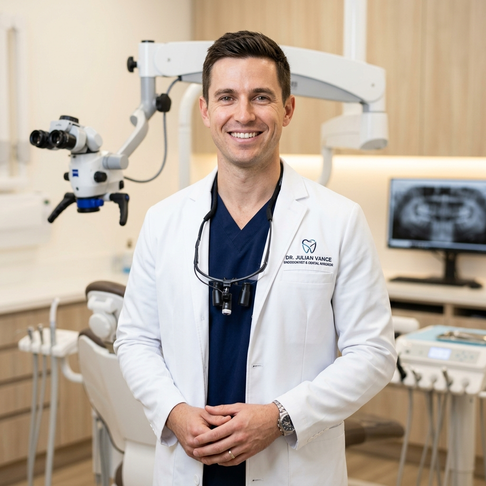

Microscopic Root Canal Treatment Guidelines
A comprehensive clinical guide to painless natural tooth preservation. Operating under 25x Carl Zeiss magnification with continuous rotary irrigation, computerized local anesthesia, and 3D bio-ceramic hermetic canal obturation.

Natural Tooth Preservation
No artificial implant can perfectly replicate the proprioceptive feeling of your own natural tooth root.
When Is Root Canal Therapy Required?
Root canal treatment becomes medically necessary when the dental pulp—the living neurovascular bundle within the inner tooth chamber—becomes inflamed, infected, or necrotic.
Acute Irreversible Pulpitis
Severe spontaneous throbbing pain that lingers for minutes after hot or cold liquids, worsening upon lying down at night due to increased intracranial pulp blood pressure.
Periapical Abscess & Swelling
Untreated pulpal infection progresses through the apical foramen into the surrounding alveolar bone, causing biting tenderness, pimple-like gum boils (fistulae), or facial swelling.
Cracked Tooth Syndrome
Micro-fractures extending deep into the dentin, causing sharp electric shocks upon releasing chewing pressure. Microscopic endodontics arrests crack propagation and relieves the nerve.
Failed Prior Root Canal
Persistent pain or recurrent periapical bone lesions beneath a tooth treated years ago, frequently caused by missed curved canals (such as MB2 in upper molars) or leaking coronal margins.
Critical Medical Guideline: Why Antibiotics Alone Cannot Cure a Tooth Infection
Once pulpal necrosis occurs, blood circulation inside the tooth stops completely. Orally ingested antibiotics travel through the bloodstream and cannot reach the inner chamber to eliminate bacteria. Mechanical debridement under microscopic magnification is mandatory to eradicate the source of infection.
The 6-Step Clinical Treatment Protocol
Every root canal procedure at Blossom Dental adheres to the highest European & American Society of Endodontists standards.
Digital 3D CBCT Volumetric Assessment & Apex Mapping
Ultra-low radiation cone beam volumetric tomography maps internal root canal curvatures, extra accessory lateral branches, and calcified canals before any drilling begins.
Computer-Assisted Painless Anesthesia & Dental Dam Isolation
The Wand® computerized injection delivers micro-droplets of local anesthetic beneath tissue resistance pressure, eliminating needle sting. A sterile latex-free rubber dental dam isolates the tooth completely from oral saliva and bacteria.
Carl Zeiss 25x Microscopic Coronal Access & Canal Identification
Operating under high-intensity coaxial illumination, Dr. Julian Vance creates a micro-conservative access cavity preserving maximum healthy tooth structure, locating microscopic canal orifices that are otherwise invisible to the naked eye.
Continuous 3D Chemo-Mechanical Disinfection & Rotary Shaping
Heat-treated Nickel-Titanium (NiTi) flexible rotary files negotiate severe root curves without zipping. Ultrasonic agitation of warm sodium hypochlorite and EDTA flushes bacteria from microscopic lateral tubules.
Bio-Ceramic Warm Vertical Condensation 3D Hermetic Sealing
Canals are dried with paper points and obturated using biocompatible calcium silicate bio-ceramic sealer and thermo-plasticized gutta-percha, creating a zero-void hermetic seal that completely blocks bacterial recolonization.
Coronal Core Reinforcement & Monolithic Zirconia Crown
A fiber-reinforced composite post and core build-up bonds the internal structure. An intraoral digital optical scan captures 3D contours for a high-strength monolithic zirconia crown that protects the tooth against heavy masticatory forces for decades.
Pre-Op & Post-Op Clinical Guidelines
Carefully following these protocols ensures a smooth, pain-free procedure and accelerated periapical bone healing.
Pre-Treatment Preparation
Before Arriving at Your Appointment- Eat a wholesome meal: Consume a light protein meal 1 to 2 hours before your appointment. Because your lips and tongue will be numb for 2–3 hours after, eating beforehand prevents hunger and stabilizes blood glucose.
- Take prescribed daily medications: Continue your regular blood pressure, thyroid, or diabetes medications as scheduled. Please provide a full list of any blood thinners (Aspirin, Warfarin, etc.) to Dr. Julian.
- Avoid stimulants: Refrain from excessive caffeine or energy drinks on the day of treatment to minimize heart rate elevation and maximize the effectiveness of local anesthesia.
- Comfort preparation: Wear comfortable, loose-fitting clothing. Feel free to bring personal headphones—our clinic also provides noise-canceling headphones and relaxing audiovisual glasses.
Post-Operative Recovery Care
First 24 to 72 Hours After Treatment- Do not chew while numb: Wait until all local numbness has completely worn off before chewing to avoid accidentally biting your lips, cheek, or tongue.
- Mastication restrictions: Avoid chewing on hard, crunchy, or sticky foods (nuts, hard bread, ice) on the treated side until the permanent monolithic zirconia crown is permanently cemented.
- Analgesic management: Mild tenderness upon biting is completely normal for 2–4 days as the surrounding periodontal ligament heals. Take prescribed anti-inflammatory medication (e.g., Ibuprofen 400mg) as advised.
- Maintain oral hygiene: Continue gentle brushing and flossing around the treated tooth. When flossing, pull the floss out through the side rather than snapping upward to avoid dislodging any temporary seal.

Dr. Julian Vance is dedicated exclusively to the science of natural tooth preservation. With extensive residency training in micro-surgical endodontics and over 8,000 completed root canal procedures, he utilizes 25x Carl Zeiss illumination to save teeth that would otherwise face extraction.
Clinical Certifications:
Frequently Asked Questions About Root Canals
Clear medical explanations addressing pain, crowns, and treatment expectations.
No. Dr. Julian uses computerized single-tooth local anesthesia (The Wand®) with digital micro-sensors that buffer anesthetic delivery. The tooth is completely profoundly numb before any instrument touches it. Many of our patients listen to podcasts or take a light nap during their appointment.
Yes. Over 90% of cases are completed in a single session thanks to modern rotary nickel-titanium instruments, ultrasonic irrigation, and biocompatible hydraulic sealers. Only in cases of severe active swelling or chronic bone abscesses do we place an antibacterial calcium medication for 7 days before final sealing.
A root-canal-treated tooth loses its internal blood supply and is often weakened by deep previous decay. Molars and premolars withstand up to 200 pounds of bite pressure per square inch. A full-coverage monolithic zirconia crown encapsulates the cusps and prevents fracture, allowing you to chew with complete confidence.
An endodontist has completed 3 years of rigorous advanced residency training exclusively focused on internal tooth anatomy and micro-vascular pain. While general dentists perform simple root canals occasionally, Dr. Julian performs 20–30 microscopic cases every week, with specialized Zeiss magnification for complex curved and calcified roots.
Don't Endure Excruciating Tooth Pain Any Longer
Dr. Julian Vance reserves same-day emergency slots specifically for acute pulpal throbbing, cracked teeth, and periapical infections.